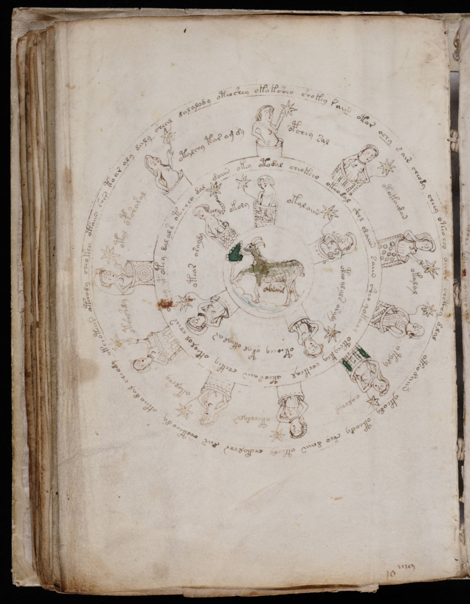

f70v1
1sheal dalalody oteoshey okoksheo shokey raiin otor ochy sais cheody cheey oteoeey oamr chcthy dlal oteodaiin ykeody oteody sheo daiin oteedy chekalchs dar shoteeody okeeo dal cheody okchoteees oteeody cheokeo otaiin shes toar aly daly sheal daly 2otalchy tar am dy3opchey sal4otokaiman5okalal6otyly7oalcheg8otchodals9okolshy10otshshdy11otol ypsharal12dal daiin okey otodal cheokeeo okeodal shol olaiin saiin sheo qokeeol oteeykey chekeal oteosaiin chekey okeolol chees oteey opotey dal al s otecheo 13okoly14otolaiin15oteo alols asaly16oteoeey otal okeal ar17oteas araydy
